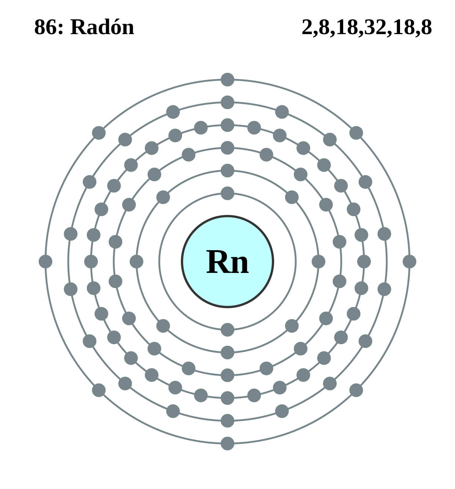

|
|
||
|
RADÓN El radón es una emanación gaseosa producto de la desintegración radiactiva del radio. Es muy radiactivo y se desintegra con la emisión de partículas energéticas alfa. Es el elemento más pesado del grupo de los gases nobles, o inertes, y, por tanto, se caracteriza por su inercia química. Todos sus isótopos son radiactivos con vida media corta. Se sabe que la exposición a altos niveles de radón a través de la respiración provoca enfermedades pulmonares. Cuando se da una exposición a largo plazo el radó aumenta las posibilidades de desarrollar cáncer de pulmón. El radón solo puede ser causa de cáncer después de varios años de exposición. El radón puede ser radioactivo, pero libera poca radiación gamma. Como resultado, no es probable que se den efectos dañinos por la exposición a radiación de radón sin contacto real con los compuestos de radón. |
 |
DATOS Número Atómico: 86 Peso Atómico: 222.0176 Electronegatividad: --- Configuración Electrónica:[Xe]4f14 5d10 6s26p6 Estados de Oxidación: 0 No. de Electrones de Valencia: 0 |